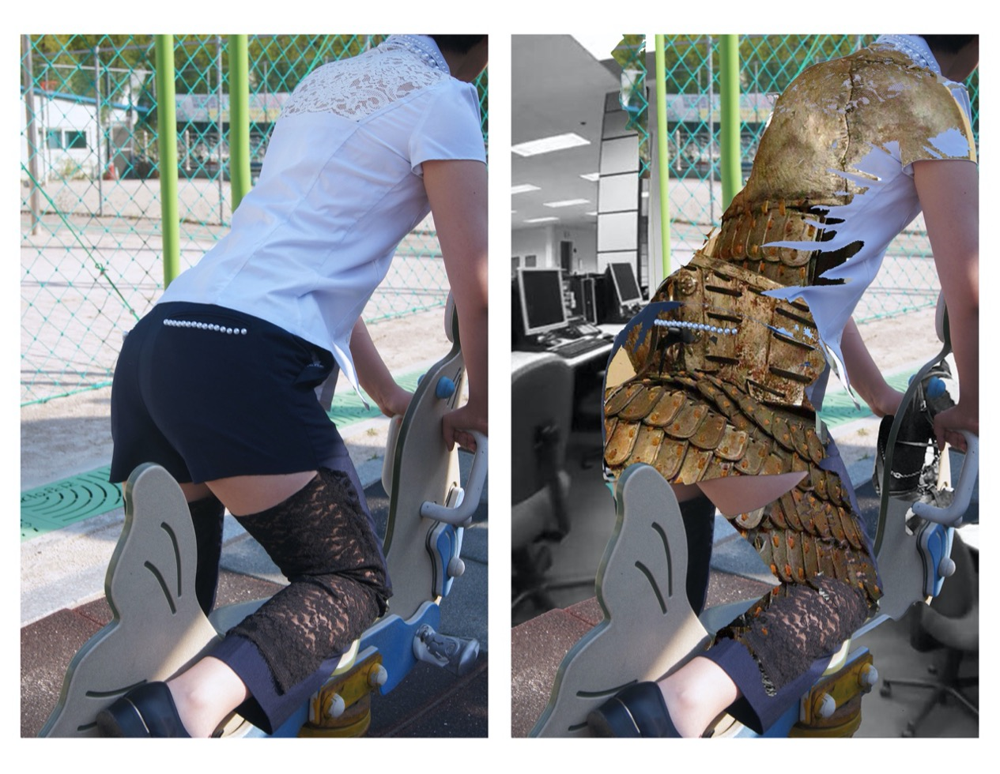
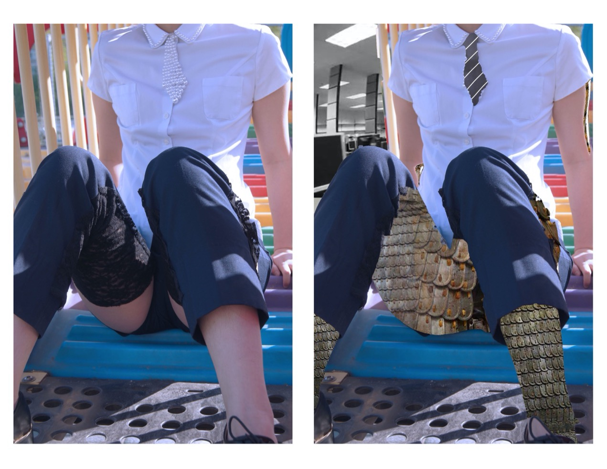

Just because I am a girl, I was banned from wearing pants in my high school. The teachers would have never known, but in fact, the female uniform was not as functional as they wished it to be. It was extra tight and short since it was made for “girls,” even though I did not intend to wear it like that. I remembered constantly hearing from my friends their experiences of being catcalled and sexually harassed on the streets, the day when all the students were sent back home early due to a stranger’s threat on the internet that he would kidnap one of our female students in uniform and rape her, and our history teacher telling us that it is our fault for objectifying ourselves by wearing short skirts, which we were required to wear to be a “good student.” Before I proceeded on this project, I made a poll and asked my friends for their opinion about the school uniform, because we all deserve to be heard. According to the submitted comments, an opinion that the female uniform was too tight and uncomfortable, almost making the students hard to move freely was predominant. Another opinion that I agreed on too, was walking around in public wearing the uniform felt like an object on display since it drew people’s attention. Also, a lot of them wished they had a choice on deciding which uniform they want to wear. However, not everyone had negative thoughts on wearing uniforms. Some expressed a feeling of satisfaction, and some said they liked the uniform just because wearing it makes them feel pretty.
It is hard to embrace our femininity when we are forced to be bound to it. I strongly believe women do not deserve to be objectified for what they are wearing, and this is why for this project, I decided to flip the male gaze and recreate uniforms and do a photoshoot through a feminist’s lens. I tried to show the vulnerability that girls go through every day by wearing the uniform they are obligated to wear without having any choices by replacing some parts of the uniform with lace and making it see through. Also, I used pearls to criticize the lack of functionality as a uniform and only focusing on its decorativeness and aesthetic.
In the 1980s, women started wearing clothes that incorporated some of the aspects of a male attire, such as suit fabrics or covering some exposing body parts, to establish their authority at a patriarchal workplace. The fact that women needed to power dress to be acknowledged just as much as what other men are, and how often in this society men belittle women, work as an armor to protect women from invading their place and to stay sequestered. Therefore, I collaged some images of armor and offices, which is a typical patriarchal work environment where most of the workers are men. By juxtaposing the original eroticized images and the collaged images, I wanted people to reflect on the vulnerable women in this society with their choices taken away.
 